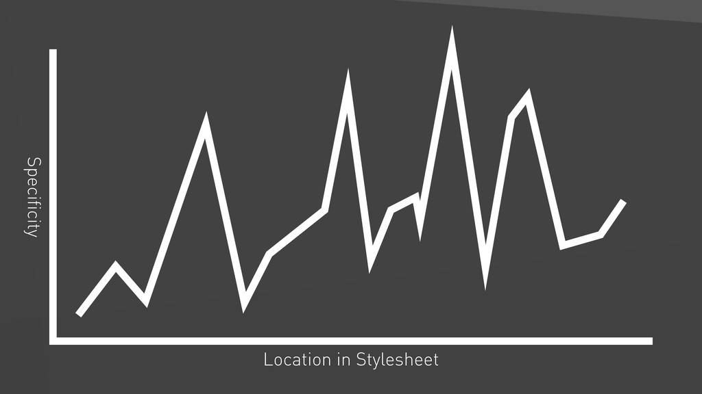

Managing CSS at scale
Why?
Top complaints about css
Global scope (inheritance, cascading)
Not a real programming language
Naming (& specificity)
How?
Architecture
Inverted
Triangle
C
S
S
Write CSS in specificity order

Layers with specific meanings
- Settings
- Tools
- Generic
- Base
- Objects
- Components
- Trumps
- Settings
- Tools
- Generic
- Base
- Objects
- Components
- Trumps
Settings:
Brand colors, other variables, default values…
$brand-primary: #eadcbe;
$brand-secondary: #333;
$text-color: #222;
$font-family-base: sans-serif;
Base:
Resets, inherited styles, classless HTML elements…
* {
box-sizing: border-box;
}
a {
color: $brand-primary;
}
WARNING!!!
ONLY CLASS SELECTORS FROM NOW ON
Objects:
preferably non-cosmetic,
highly reusable,
childless
.button {
...
}
.row {
...
}
.col {
...
}
Components:
More specific, designed, usually have children elements
.header {
...
}
.header__upper {
...
}
.footer {
...
}
Trumps:
Overrides, utility classes,
.clearfix {
... !important;
}
specificity slowly increases
rules progressively affect smaller parts of the DOM
never undoing
styles-folder
├── 0.config
│ ├── _variables.scss
│ └── _mixins.scss
├── 1.base
│ ├── _forms.scss
│ ...
│ └── _images.scss
├── 2.objects
│ ├── _button.scss
│ ...
│ └── _grid.scss
├── 3.components
│ ├── _main-footer.scss
│ ...
│ └── _primary-nav.scss
├── 4.trumps
│ ├── _print.scss
│ └── _utilities.scss
└── style.scss
Outcomes
- Everything has a place to live
- People know where to look to find types of rules
- Source order that makes sense
- Reduced redundancy
- Increased scalability
- No specifity wars
Naming
BEM
.block__element--modifier
.button
.button__icon
.button--primary
.list__item--forbidden
Bonus round: Namespacing
x- before BEM naming
.c-sidebar__item--highlight
- o- for objects
- c- for components
- u- for utility classes
Other possibilities / suggestions
- is- for state
- _ for hacks
- js- for javascript hooks
So...
Namespaced BEM + ITCSS = ❤️